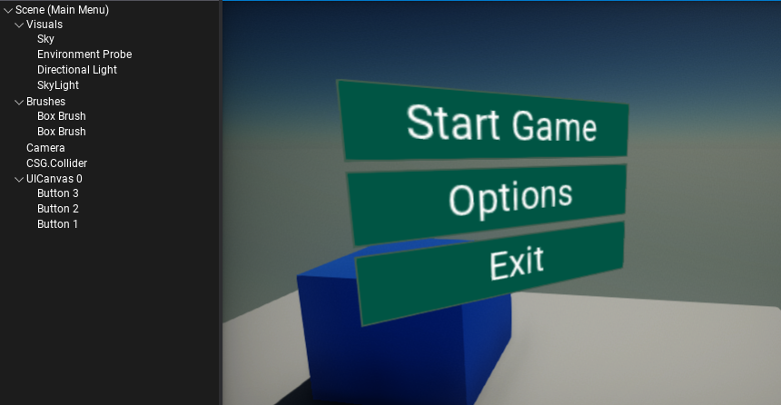
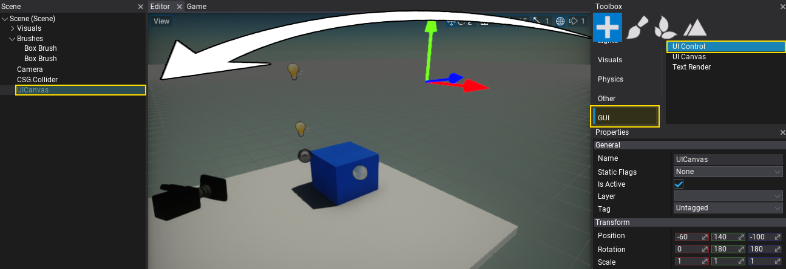
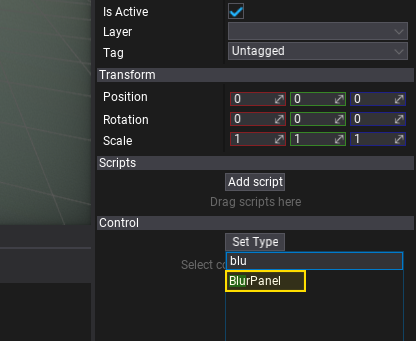
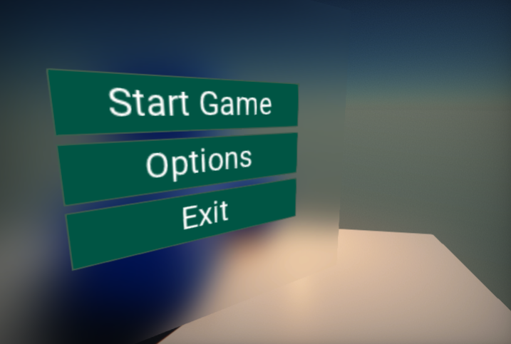

HOWTO: Blur UI panel background
In this tutorial, you will learn how to create a blur panel and use it to distort the background of the UI panel. To learn more about the properties of that control see the related documentation here.
1. Create UI
The first step is to prepare the UI. You can follow this tutorial to learn how to do it.

2. Create UIControl
Follow the same steps as in the previous step, except now create a UI Control actor that represents a single GUI control. Add it as a child to the UI Canvas (as shown in a picture below). It's important to move the created control to be before the other controls in the hierarchy (eg. as the first child of the canvas).

3. Set control type to Blur Panel
For the newly created GUI we will use a Blur Panel control. To do so, select the spawned UI Control and click on the Set Type button and set its type to Blur Panel. Do so by picking the item from the list or type the name to search for it.

4. Adjusting the panel
Now, set the Blur Strength to 8 for example and adjust the bounds of the control to cover the whole background of the interface (you can use Dock Style set to Fill).
5. See the results
The blur panel captures the scene and the UI that is located beneath the control and applies the gaussian blur effect. You can use the Background Color property to create a colored blur.
The picture below shows the result effect.
